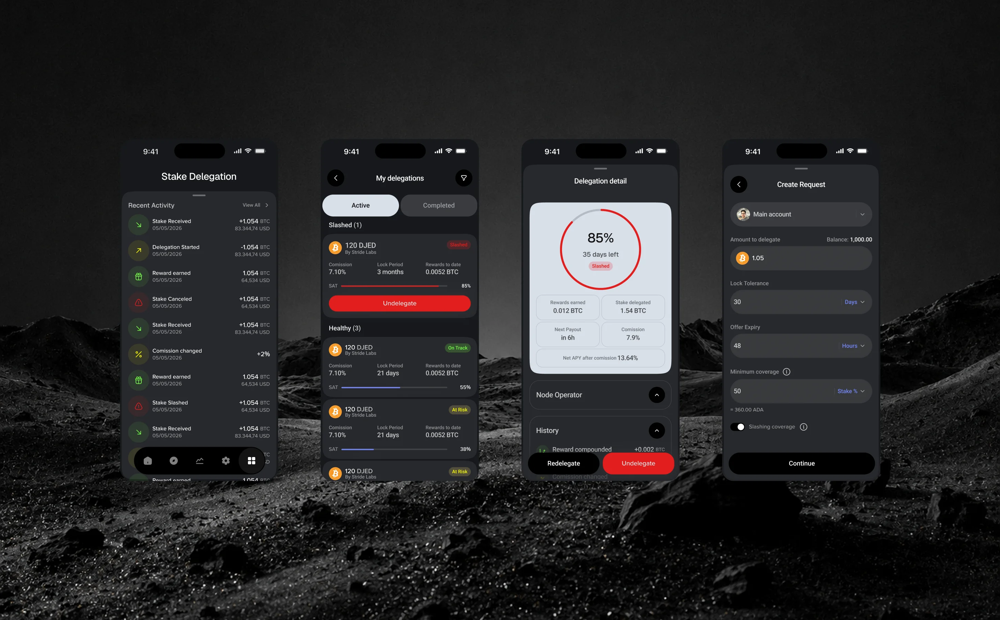
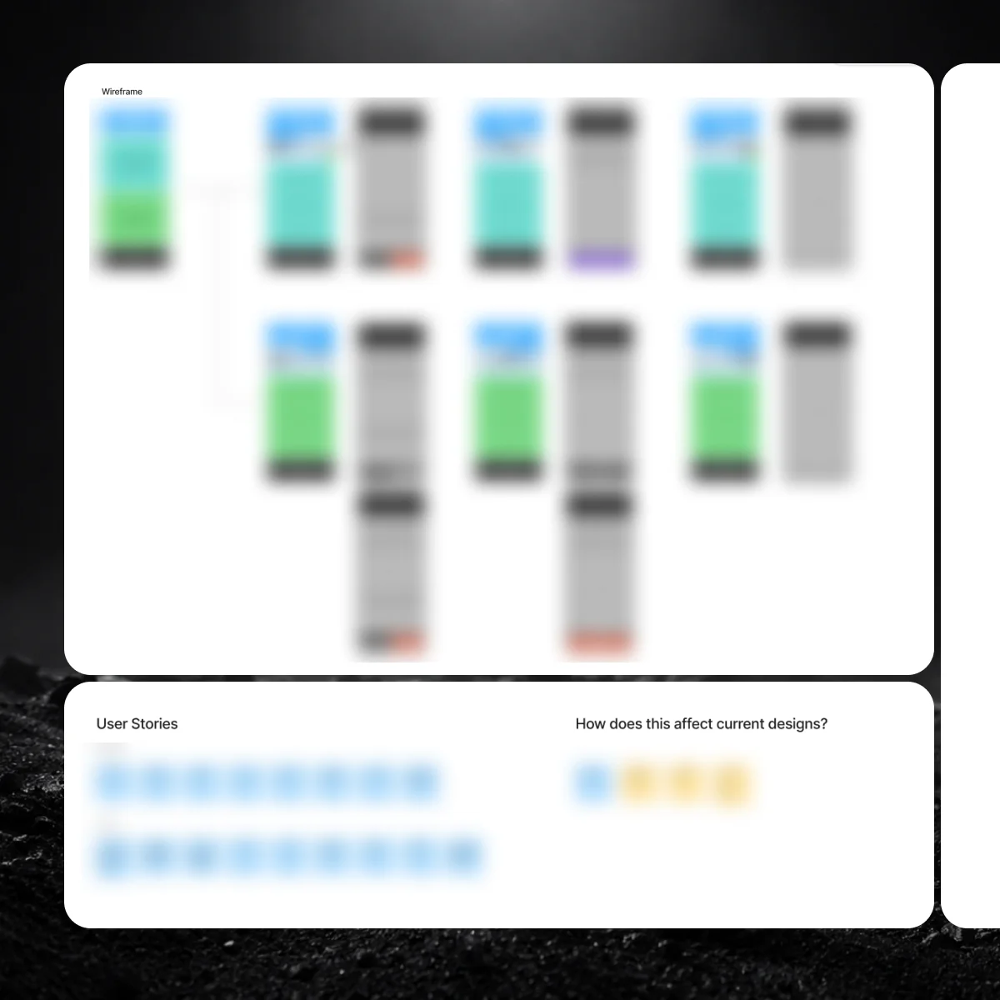
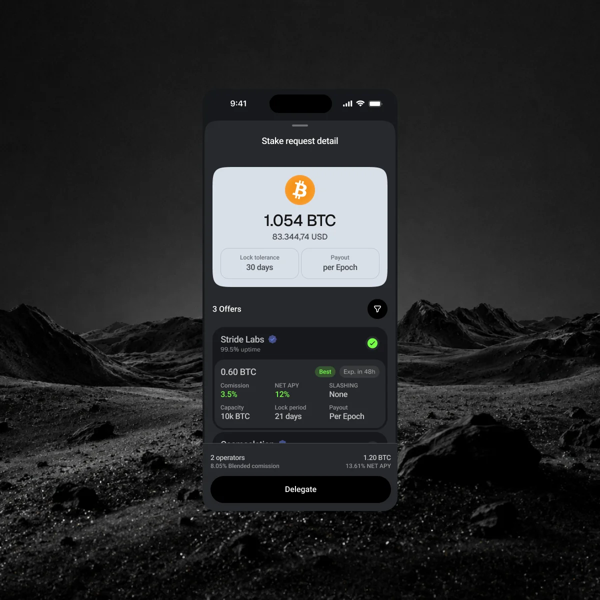
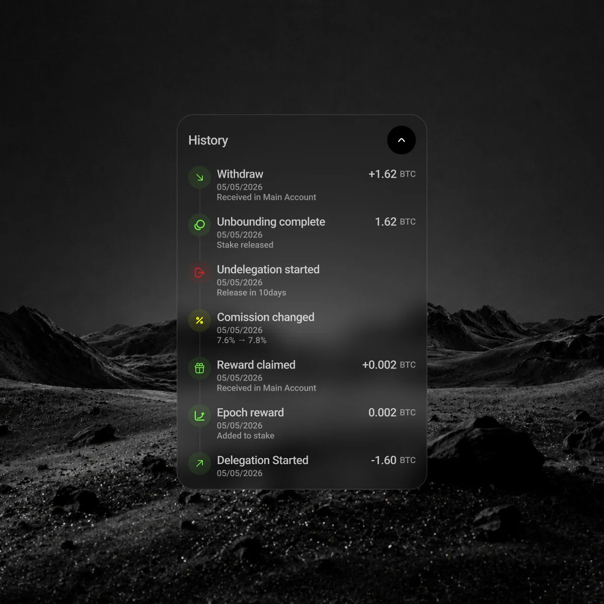
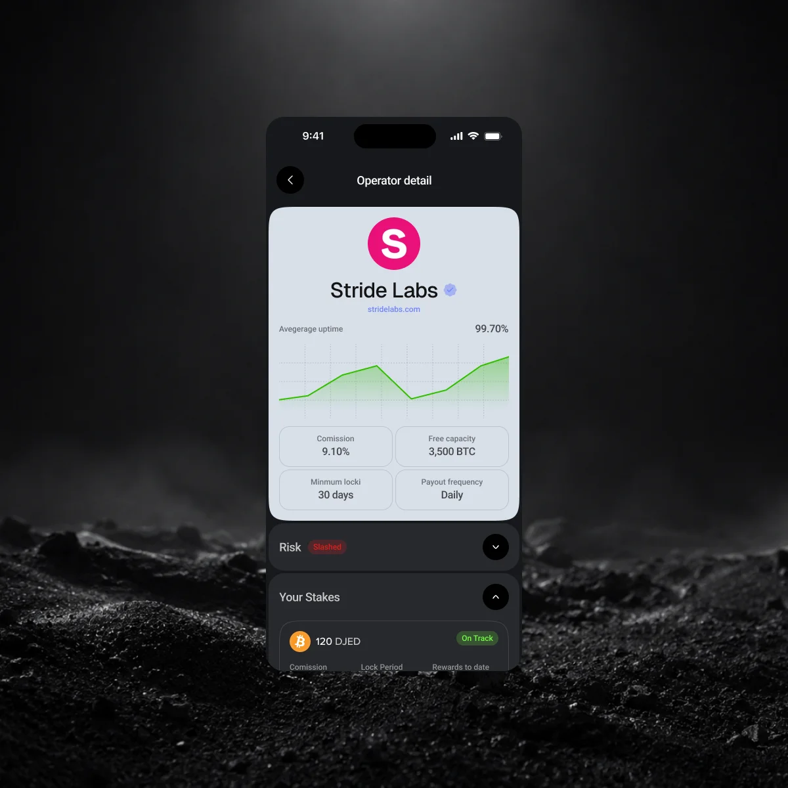
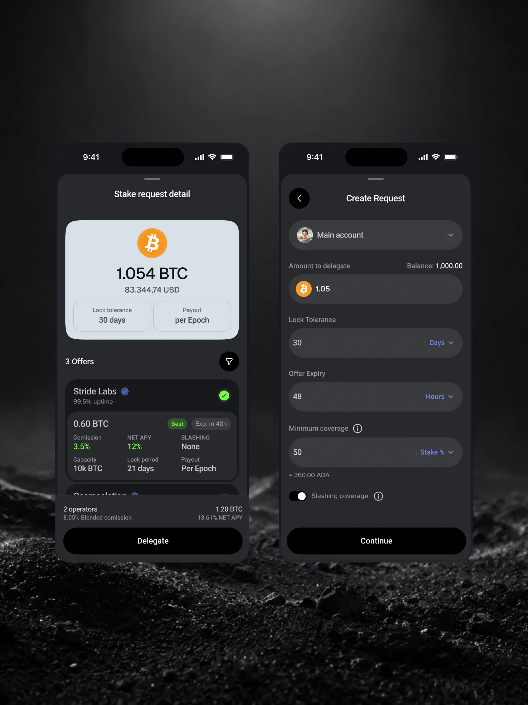
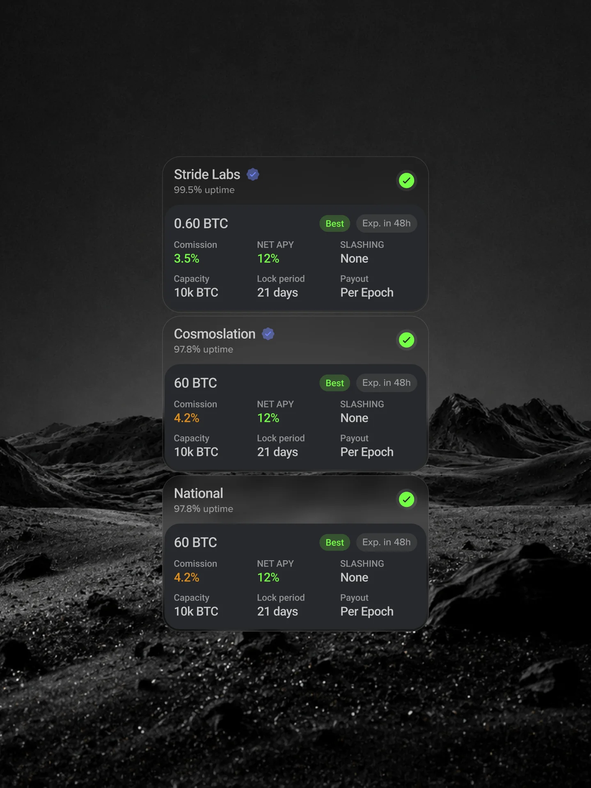

Crypto · Fintech · 2025
BTC Staking Marketplace
Introducing a staking marketplace to a multi-chain wallet (NDA).
- Stake retention through first unbonding
- 61%
- Delegators who re-delegate rather than withdraw after their first unlock.
- Request-to-delegation rate
- 24%
- Published requests that become active delegations after bid acceptance.

Challenge
The wallet's existing staking flow only let holders pick a validator from a list sorted by advertised yield, no way to negotiate terms, and no clear read on commission, uptime, or slashing risk before committing.
As the wallet expanded to new features and more crypto-savvy users, we needed a way to introduce features variables where we would give more autonomy for users, and so the staking marketplace idea was born.

Discovery
Ideation workshop
Before any visual design, we ran stakeholder workshops to generate userflows, journey mapping, and quick wireframes to align on product structure and navigation.
What was wireframed:
- The Stake Desk entry point inside existing wallet navigation
- Publishing a delegation request (what to stake, terms wanted)
- Comparing and accepting operator bids




Solution
-
Bid market over ranked list
Instead of a validator list sorted by advertised yield, the delegator posts what they hold and node operators bid commission terms against it inverting who has to make the first move.
Trade-offLess familiar mental model. A bid market takes more upfront explanation than a sortable list, so extra guidance before publishing their first request was needed.
-
Split-stake acceptance
A delegator can accept several bids within a single request, splitting their stake across multiple operators in one action instead of publishing separate requests.
Trade-offMore complex request state. A single request can now be partially filled by more than one operator. True benefit for delegators who wants to optimize their stakes.
-
Health-grouped position dashboard
Existing delegations are grouped by health rather than by size or chain, so a jailed or slashed delegation always surfaces first.
Trade-offPrioritizing risk visibility over holdings size means a delegator's largest, healthy position can sit lower on the dashboard than a small, at-risk one.


What I learned
- Inverting the flow so delegators post requests instead of picking from a list meant onboarding had to teach the model itself, not just the screens.
- Grouping the position dashboard by health instead of size or recency was a small decision that mattered more than most of the visual design.